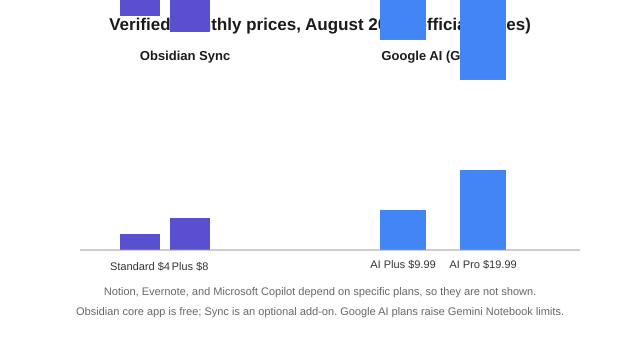

Best AI Note-Taking Apps (2026): 7 Compared by Price
The short version
TL;DR: For most working professionals, Notion AI is the most complete pick because it puts an assistant inside your docs, databases, and meeting notes for a single subscription. If you keep your notes in Markdown and care about owning your files, Obsidian plus a community AI plugin is the better long-term bet. Google's Gemini Notebook (formerly NotebookLM) is the best free tool when your goal is to feed AI a pile of sources and get summaries, audio, and study aids back, but it is not a catch-all notes app. Evernote and Microsoft OneNote are the incumbent choices if you already live inside their ecosystems and want AI bolted onto an existing workflow.Last updated: 2026-08-14. Prices and details verified against official sources.
Prices and feature claims below were checked against official vendor pages in August 2026. Note-taking apps change fast, and so do their AI features, so treat anything model- or price-specific as a point-in-time snapshot.
What is the best AI note-taking app overall?
Notion AI is the most useful day-to-day, purely because it is embedded rather than add-on. It can write and summarize directly in pages and databases, autofill database properties, generate meeting notes that transcribe and summarize, and a Notion Agent can take on tasks using your workspace context. Research Mode generates longer reports, while (on Business and Enterprise) Enterprise Search reaches across connected apps like Slack and Google Drive. Because the AI reads the workspace you already use, answers are grounded in your actual notes instead of generic text.
Notion AI is included with Business and Enterprise plans, and the other plans get a limited trial. Custom Agents run on Notion credits, priced at $10 per 1,000 credits, according to the official pricing page. On privacy, Notion states it does not use your data to train its models and that non-Enterprise data is retained for 30 days, with zero data retention on Enterprise.
What are the best free AI note-taking apps?
Two free options stand out, and they do very different jobs.
Gemini Notebook (notebooklm.google, formerly NotebookLM) is free and research-first. You add sources - PDFs, web pages, Google Docs, slides, copied text - and chat with AI grounded strictly in those sources. It can generate Mind Maps, Audio Overviews (the podcast-style two-voice summaries), Video Overviews, flashcards, quizzes, infographics, and slide decks from your material. That makes it the best free pick when you are studying, prepping a talk, or digesting a stack of files. The catch: it is a research workbench, not a spot for everyday scratch notes. Paid Google AI plans (Plus, Pro, Ultra) raise the limits in Gemini Notebook, per Google's plans page.
Obsidian is also effectively free on the core app, which never charges for personal or even commercial use. Your notes live as local Markdown files, Obsidian collects no telemetry, and version history and offline access come by default. The "AI" is not built in; community plugins such as the Copilot plugin or Smart Connections add it, wired through your own API key or local model. If you want full control of your data and do not mind configuring things, Obsidian is the most private choice, but the least "it just works" of the group.
Evernote offers the most generous free tier of the mainstream paid apps: 50 notes, 1 GB of storage, and syncing on one device at the free level, per its official compare-plans page.
How do Notion, Evernote, OneNote, Obsidian, and Gemini Notebook compare?
Here is a snapshot. Dollar figures are the ones I could verify from official pages in August 2026; where I could not verify a number, I left the cell blank rather than guess.
| Tool | Built-in AI? | Best at | Free tier | Entry paid (verified) | Notable trade-off |
|---|---|---|---|---|---|
| Notion AI | Yes (Notion AI blocks, Meeting Notes, Agent, Research Mode) | All-in-one docs, databases, projects with embedded AI | Free, with limited AI trial | AI included in Business/Enterprise; custom agents $10 per 1,000 credits | Owns your data on their servers; AI requires paid Business/Enterprise for full access |
| Evernote | Yes (AI Assistant, AI Edit, AI Transcribe, AI Cleanup, Semantic Search) | Capture, scans, web clips, meetings | 50 notes, 1 GB, 1 device sync | Starter and Advanced tiers (see official page) | Device and storage caps on free |
| Gemini Notebook | Yes (source-grounded chat, Mind Maps, Audio/Video Overviews, quizzes, infographics) | Research, study, digesting sources | Free | Expanded limits via Google AI Plus / Pro | Not a daily capture app |
| Obsidian | Via community plugins (Copilot, Smart Connections) | Local Markdown library, linking, long-form writing | Free core app | Sync $4/mo (1 GB) or $8/mo (10 GB), billed annually | No built-in AI; you configure it |
| Microsoft OneNote + 365 Copilot | Yes (Copilot in OneNote; Copilot Notebooks with podcast-style summaries) | Freeform notes inside the Microsoft 365 ecosystem | OneNote is free; Copilot needs a subscription | Copilot adds to your Microsoft 365 plan | AI depends on an M365 Copilot license |
Sources: Notion pricing, Notion AI, Evernote compare-plans, Gemini Notebook Help, Obsidian pricing, Obsidian Sync, all retrieved August 2026.
How much do AI note-taking apps cost?
It depends on the model you pick. The core Obsidian app is free, and its optional Sync starts at $4 per user per month (Standard, 1 GB) or $8 per month (Plus, 10 GB) billed annually, per the official Sync page. Google's Gemini Notebook is free, with higher usage limits on the paid Google AI plans. Evernote charges a separate subscription with Starter and Advanced tiers on top of a limited free plan. Notion bundles AI into Business and Enterprise, with per-credit automated agents priced at $10 per 1,000 credits. Microsoft sells Copilot as an add-on to an existing Microsoft 365 subscription rather than a standalone note price.

Which one should a working professional actually pick?
Match the tool to the kind of notes you take.
Run a team or manage projects and meetings? Notion AI is the strongest fit because the AI sits inside the workspace where your tasks, docs, and databases already live. It turns meeting recordings into summaries and can search across connected tools, saving real time for people who live in Notion anyway.
Are you a student, researcher, or someone who quotes sources constantly? Use Gemini Notebook. Its source grounding and audio/video overviews beat everything else at turning a folder of PDFs into something you can actually study from. Keep a lightweight scratch app for daily capture alongside it.
Do you care more about owning your files than about convenience? Obsidian. Local Markdown, no vendor lock-in on your notes, end-to-end encrypted sync if you pay for it, and AI is optional because it runs through your own plugin and API key. You trade setup effort for control.
Already pay for Microsoft 365 or Evernote? Staying inside that ecosystem with Copilot or Evernote's AI Assistant is often the least-effort route, even if it is not the most flexible.
What should you check before you commit?
- Where does your note data actually live, and can you export it? Obsidian stores plain Markdown; Notion and Evernote store it on their servers with exports.
- Does the built-in AI read your existing notes and files, or only whatever you paste into a chat box? Grounded, context-aware AI is far more useful.
- What are the free-tier limits for notes, storage, and synced devices? Evernote caps free at 50 notes and one device; Obsidian's core app has no such caps.
- Will your team's data be used for model training? Notion and Microsoft state their AI does not train on your data; confirm the same for whatever you evaluate.
- Is AI a built-in feature or a per-user add-on? The one-time "AI included" plans can beat an explicit per-seat AI add-on on total cost.
FAQ
Is Notion AI free?
Notion has a free plan with limited AI trial usage. Full access to the core AI features (agent, meeting notes, enterprise search) is included with the Business and Enterprise tiers, per Notion's official pricing page. Custom Agents that run automatically consume Notion credits, priced at $10 per 1,000 credits.
Is Gemini Notebook the same as NotebookLM?
Yes, effectively. The product once known as NotebookLM is now called Gemini Notebook and lives at notebooklm.google. The same core idea carries over: you add sources and the AI answers strictly from them, with tools like Mind Maps and Audio Overviews built in, per the official Gemini Notebook Help center.
Does Obsidian have built-in AI?
No. Obsidian is a local, Markdown-based notes app with no first-party AI. Community plugins such as Copilot and Smart Connections add chat, q&a, and related-note discovery, typically using your own API key or a local model so your text stays on your machine.
Can Evernote flag and summarize meeting recordings?
Yes. Evernote's current plan comparison lists AI Transcribe (record, summarize, and transcribe meetings) alongside AI Edit, AI Cleanup, the AI Assistant chat, and Semantic Search for finding related notes by meaning.